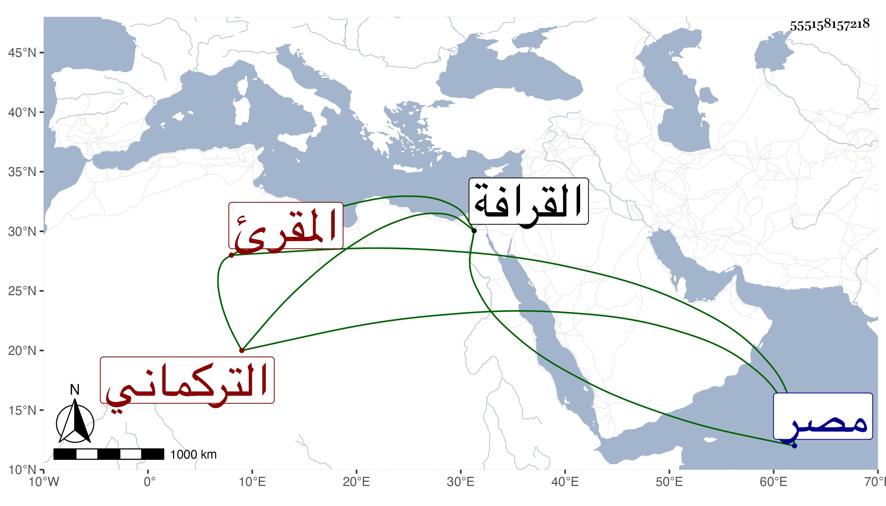

0902Sakhawi.DawLamic.ITO20230111-ara1.EIS1600.555158157218
Biography ID: 555158157218
655
مظفر بن أبي بكر بن مظفر بن إبرهيم التركماني المقرئ والد أحمد الماضي ويسمى محمدا أيضا . ذكره ابن الجزري في طبقات القراء فقال : الشيخ الصالح الولي من خيار خلق الله قرأ السبع على خليل بن المشبب وأخذ عني قليلا وانقطع بالقرافة ثم انتقل إلى دير الطين ظاهر مصر فانقطع هناك وأقرأ الناس وهو عديم النظير زهدا وورعا بلغني أنه توفي سنة ثلاث كذا قال والحق أنه من ذاك القرن وقد ذكره شيخنا في سنة تسع وتسعين من إنبائه وأشرت لذلك في ولده من معجمي .
